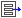
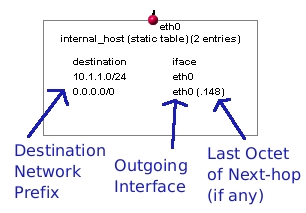
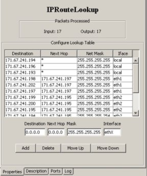
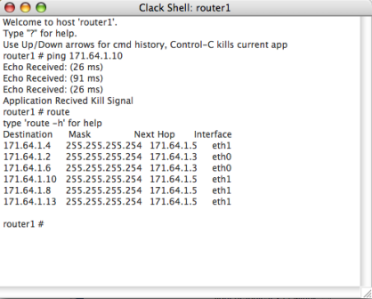

Clack is an application that demonstrates network concepts by visualizing a network of virtual devices (routers and end-hosts) that run real Internet protocols like Ethernet, IP, and TCP. Clack provides you with a personal network to explore by allowing you to generate traffic and ''zoom in'' to see what is happening inside each device as it handles that traffic.
Clack provides three "views" of network behavior:
Network View: Shows the entire network, depicting individual routers/hosts, their IP addresses and their connectivity.
Router View: Shows the inside of a single router. Router functionality is depicted as a collection of modular "components" connected by "wires" that pass packets from one component to the next.
Packet View: A simple Ethereal-clone that supports packet inspection.
To launch the Clack Graphical Router, just open http://www.clackrouter.net/run/ in a new window/tab in any Java 1.4 enabled browser. After starting Clack, you must specify a topology file, which describes the network topology and host configuration for your virtual network (note: for some assignments, Clack will automatically be configured with a topology file and you can skip this step). You can download this topology file to explore Clack during this brief intro.
After loading Clack, select File -> Open
and choose the topology file.
To save your progress configuring the network hosts (as well as any
graphical changes you may have made), select File -> Save
 to create an updated topology file
to create an updated topology file
Once a topology is loaded, Clack provides you with three levels of
abstraction for exploring your virtual network. Open up Clack to see
each type of view while you are reading the explanation. You can use the
 and
and  buttons to move between
the network and router views.
buttons to move between
the network and router views.
It is important to understand the topology of the network before thinking about what is happening in a particular router or end-host. The network view shows your network as a set of routers and hosts, connected by network links. Links flash green when they carry packets. Double-clicking on a link toggles the links enabled/disabled status, with disabled (i.e., disconnected) links colored red.
The network view also lets you view the routing tables of all nodes at once to easily see how packet forwarding decisions are made.
|
A condensed version of each host's routing tables can be viewed/hidden by toggling the  button within the network view. As seen on the right, the routing table lists the destination network prefix, the outgoing interface, as well as the last "octet" (ie: byte) of the next-hop for that routing entry, if a next-hop exists. Whenever a routing entry is used to forward data, that entry is highlighted. |

figure: a single host's routing table, from network view |
|
Double-clicking on a router or host, you can zoom in to see the internals of the router. This view breaks each piece of router functionality into distinct blocks called components. Components have different "ports", which are connected by wires that carry packets between components. Wires light up when packets are passed along them. Most components just receive packets from other components, and either drop them or pass them on (possibly after modifying the packet). There are a few special blocks: The gray interface blocks at the top of the view represent the input interfaces of the router. Packets enter the router at this point, and exit it at the gray output interfaces at the bottom. The dark gray vertical boxes right above the output interfaces are packet buffers. |
figure: the router view, showing a single router with three interfaces |
|

Figure: An example property view for the IPRouteLookup component. |
The router view let's you see what components interact, but not what is inside the packets. For this, we provide a clone of the popular networking tool ethereal. At any point you can see all of the packets sent to and from particular host (on any interface) by clicking on the icon, and choosing a particular host to sniff on. Packets are recorded once when arriving at an input interface, and once when leaving an interface.
We will now explore several of the more advanced features of Clack, including the Clack shell, controlling "virtual time" within Clack, and tracking down errors in Clack components.
|
This Clack network is not connected to the Internet, so you will have to generate traffic using the command-shell that let's you "log-in" to different hosts in your network. To use the command-line, select the icon, and choose the host you want to access. Type '?' to see all of the commands available in the shell. To generate traffic, use the 'ping' command, followed by the IP address that you want to contact. (Hint: to quickly change between different hosts using the same shell, type ! immediately followed by the new hostname, for example, '!router1'). A faster way to reconfigure components is to use command-line utilities, which mimic those provided by Unix. For example, interfaces can be configured using ifconfig and routes can be added to a routing table using route. Run these applications with the -h flag for exact usage guidelines. |

Figure: Instance of the Clack Shell that has run 'ping' and 'route' commands. |
|
The toolbar on the right side of the Clack frame allows you to control the speed with which all elements within the Clack network experience time. For example, slowing the speed will both slow the speed of packets moving from one component to another, as well as increase the real-world time it takes for periodic timers to expire within the Clack network. At the top of this side-bar is a clock that depicts elapsed "clack time" in seconds since the network was created. The slider bar let's you incrementally change the speed of the Clack network. The "pause" button completely stops the passage of time in the network, while the "play" button resumes time at the previous rate after time has been paused. Freezing time with pause can be helpful if you want to quickly analyze unexpected behavior. However, beware that no packets will be transmitted at all when traffic is paused. |
|
If your network is partially, or incorrectly, configured and you attempt to send packets across it, you are likely to cause some network error conditions. What are examples of an error? A routing table given a packet with a destination IP that does not match any entry, an ARP lookup that receives no response, or a packet with a TTL of zero.
Clack makes it easier for you to find such errors when they occur in your network. If you are currently at the network view and an error occurs inside a host, that host will become outlined in red. When you zoom into that host, one of the components will be outlined in red, indicating that it caused the error. Double-click the component to see its property-view, and access the 'log' tab to see the error message that caused the error. Any packet that is dropped will be indicated by an error. Select "Clear All Error Markings" in the View menu to clear indications of all past errors.
Using the button to view routing table entries along with ping is a simple way to test whether you network is functioning correctly. You can double-click on links to disable them and see how that affects connectivity.
For larger networks, manually testing connectivity is a pain, so Clack provides a mechanism to automatically test all pairs reachability using ping traffic. Clicking on the icon launches a simple test that reports back any IP interface that cannot be reached by a particular router.
You can save any changes you make to Clack, so you do not have to reconfigure
it each time you re-open it. For example, if you move elements around in
the network or router views in order to make them better fit your
screen, you just need to click the button, and you
can save this new set-up to a file. In order to load these changes the
next time you run Clack, use the "-f" flag to specify a filename at the
command-line, or use the button.
Selecting save serializes the entire contents of the Clack network to file, meaning that changes you made to any host will show up in the new configuration file.
Saving is also needed when you are building a special type of router for use in an assignment. Hitting "Save" will serialize all components within a router, allowing you to build a router and have others view it later. Using the normal Save feature, some internal configuration of elements is not saved. For example, the contents of a routing table. However, using "Save All", the will serialize this state as well. For most uses of Clack "Save All" is not necessary.
For some uses, it is helpful to have Clack networks connected to the Internet so you can generate traffic on any computer and have it flow through your Clack network. You will know that your are working with a Internet-connected version of Clack if your network view contains an Internet "cloud" and "firewall" component.
Clack integrates with the Virtual Network System (VNS) to support this, but the use of VNS should be largely transparent to the user. If you are using Clack with Internet connected networks, you will be provided with a unique number called a "topology ID" that Clack will prompt you for at startup.
Be aware that slowing down Clack's virtual time too much may cause real Internet hosts that are routing traffic through Clack to time-out.